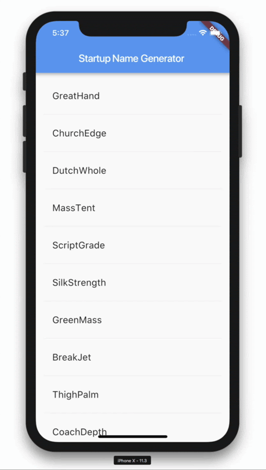
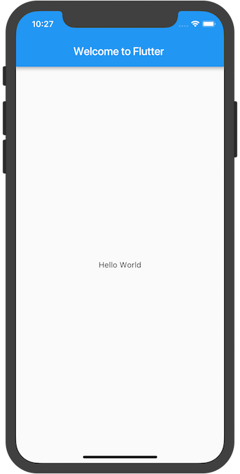
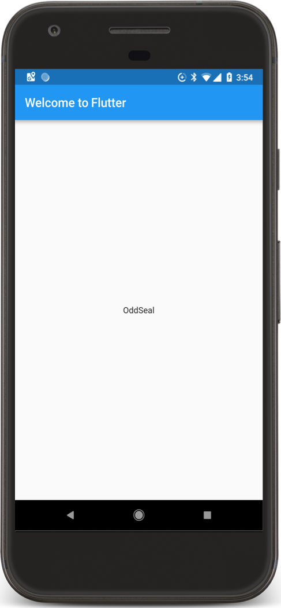
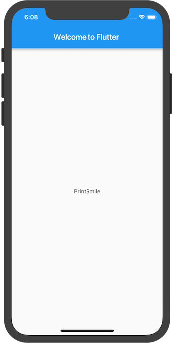
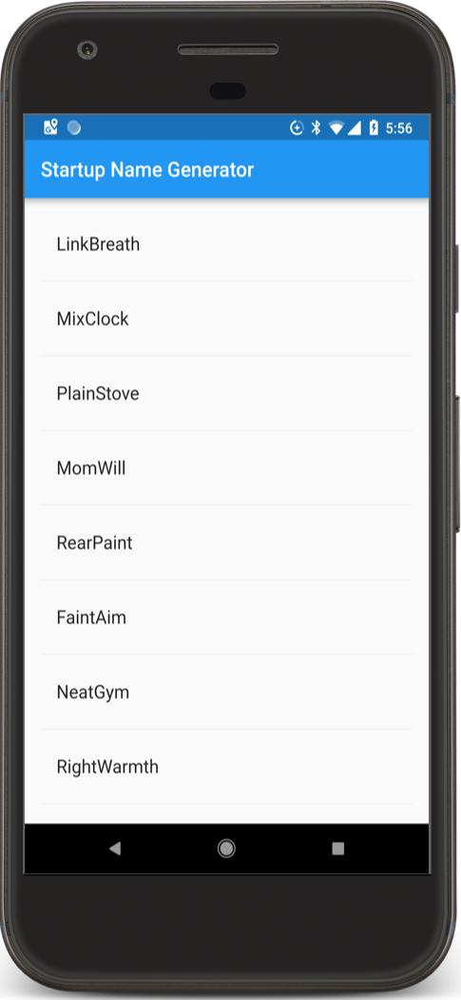
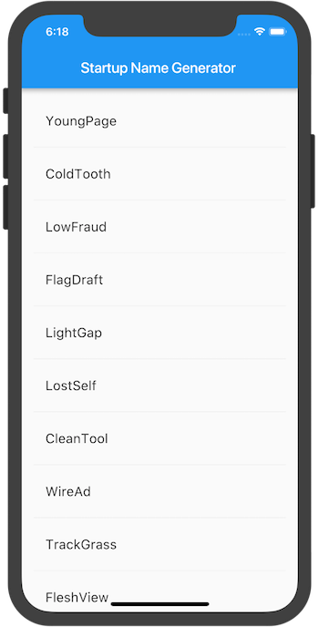
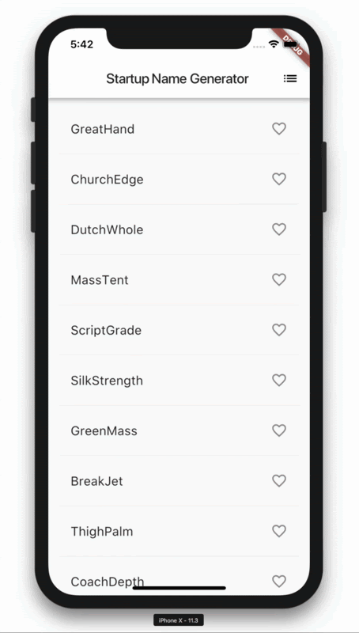

Flutterは、GoogleのUIツールキットです。これは単一のコードベースからモバイル、ウェブ、デスクトップ向けのネイティブにコンパイルされた美しいアプリケーションを構築するためのツールです。Flutterは既存のコードと一緒に動作し、世界中の開発者や組織で使用されている、無料でオープンソースのプロダクトです。
このコードラボでは、シンプルなモバイルFlutterアプリを作成します。オブジェクト指向のコードや、変数、ループ、条件分岐などの基本的なプログラミングの概念に精通していれば、このコードラボを修了することができます。Dartやモバイル、Webプログラミングの経験は必要ありません。
パート1で学べること
- iOS、Android、Webで自然に見えるFlutterアプリの書き方
- Flutterアプリの基本構造
- 機能拡張のためのパッケージの見つけかたと使いかた
- ホットリロードを利用した開発サイクルの短縮化
- Stateful widget (5章で説明)を実装する方法
- 遅延読み込みされる無限リストを作成する方法
このコードラボのパート2では、インタラクティブな機能を追加し、アプリのテーマを変更し、新しいページ（Flutterではルートと呼ばれます）にナビゲートする機能を追加します。
パート1で作るもの
スタートアップ企業の名前案を生成するシンプルなアプリを実装します。ユーザーは名前を選択したり解除したりすることができ、最適なものを保存します。コードでは、一度に10個の名前を遅延生成します。ユーザーがスクロールすると、より多くの名前が生成されます。ユーザーがスクロールできる範囲に制限はありません。
次のアニメーションGIFは、パートの完了時にアプリがどのように動作するかを示しています。

このラボを完成させるには、Flutter SDKとエディターの2つのソフトウェアが必要です。(このコードラボでは、Android Studio を使用していることを前提としていますが、お好みのエディタを使用することができます）。
コードラボを実行するには、次のいずれかのデバイスを使用します。
- コンピュータに接続され、開発者モードに設定されたAndroidまたはiOSの実機
- iOSシミュレーター（macOS かつ Xcodeツールのインストールも必要です）
- Androidエミュレーター（Android Studio および Android SDK のセットアップも必要です）
- ブラウザ（デバッグにはChromeが必要です）
シンプルでテンプレート化されたFlutterアプリを作成します。startup_namerという名前のFlutterプロジェクトを作成し、以下のコマンドで null safety に移行させます。
$ flutter create startup_namer
$ cd startup_namer
$ dart migrate --apply-changesここでやることは、Dartのコードが格納されているlib/main.dartの編集です。
lib/main.dartからすべてのコードを削除し、lib/main.dartの内容を以下のコードに置き換えます。これは、画面の中央に「Hello World」を表示します。
import 'package:flutter/material.dart';
void main() => runApp(MyApp());
class MyApp extends StatelessWidget {
@override
Widget build(BuildContext context) {
return MaterialApp(
title: 'Welcome to Flutter',
home: Scaffold(
appBar: AppBar(
title: const Text('Welcome to Flutter'),
),
body: const Center(
child: const Text('Hello World'),
),
),
);
}
}ヒント：アプリにコードを貼り付けると、インデントがずれてしまうことがあります。以下のFlutterツールで修正することができます。
- Android Studio/IntelliJ IDEA: Dartのコードを右クリックし、「Reformat Code with dartfmt」を選択します。
- VS code: 右クリックして「Format Document」を選択します。
- ターミナル: flutter format <filename> を実行します。
アプリを実行します。お使いのデバイスに応じて、Android、iOS、Webのいずれかの出力が表示されるはずです。
|  |

ヒント：物理デバイス上で初めて実行した場合、ロードに時間がかかることがあります。その後は、ホットリロードを使って素早く更新することができます。サポートされているIDEでは、アプリが実行されている場合、Saveでもホットリロードを実行します。flutter runを使用してコンソールから直接アプリを実行している場合、rを入力するとホットリロードが実行されます。
考察
- この例では、Materialアプリを作成します。Materialは、モバイルやウェブで標準的に使用されているビジュアルデザインのための言語です。FlutterはMaterialウィジェットの豊富なセットを提供します。
- mainメソッドはアロー(=>)表記を使用しています。一行の関数やメソッドにはアロー表記を使用します。
- アプリは StatelessWidget を継承しており、アプリ自体をウィジェットにしています。Flutterでは、 alignment 、 padding、 layout など、ほとんどすべてがウィジェットになります。
- MaterialライブラリのScaffoldウィジェットは、デフォルトのアプリバー、タイトル、そして bodyプロパティを提供します。これはホーム画面用のウィジェットツリー(ウィジェットの入れ子構造)を保持しています。ウィジェットのサブツリーは非常に複雑になります。
- ウィジェット(StatelessWidget) の主な仕事は、他の下位レベル(子孫)のウィジェットを表示する方法を記述するbuildメソッドを提供することです。
- この例のbodyは、Centerウィジェットに Textの子ウィジェットを含ませて構成されています。Centerウィジェットは、そのウィジェットのサブツリー(子孫)を画面の中央に配置します。
このステップでは、english_wordsというオープンソースのパッケージを使い始めます。このパッケージには、最もよく使われる数千の英単語と、いくつかの便利な関数が含まれています。
english_wordsパッケージは、他の多くのオープンソースパッケージと同様に、pub.devで見つけることができます。
pubspecファイルは、Flutterアプリのアセットを管理します。pubspec.yamlにenglish_wordsを追加します: ^4.0.0-0 (english_words 4.0.0-0 or higher) を dependencies のリストに追加します。
dependencies:
flutter:
sdk: flutter
cupertino_icons: ^1.0.2
english_words: ^4.0.0-0 # add this lineAndroid Studioのエディタビューでpubspecを開き、(ガイド表示されている) Packages get(Pub get)をクリックします。これで、パッケージがプロジェクトに取り込まれます。すると、コンソールに以下のように表示されるはずです。
flutter pub get
Running "flutter packages get" in startup_namer...
Process finished with exit code 0また、dart pub getを実行すると、プロジェクトに取り込まれたすべてのパッケージとそのバージョン番号のリストを含むpubspec.lockファイルが自動生成されます。
lib/main.dartで、新しいパッケージをインポートします。
import 'package:flutter/material.dart';
import 'package:english_words/english_words.dart'; // Add this line.文字を入力すると、Android Studioはインポートするライブラリの候補を表示します。そして、グレーで表示されたインポート文字列は、インポートされたライブラリが（今のところ）未使用であることを教えてくれます。
次に、"Hello World "文字列を使う代わりに、english_wordsパッケージを使ってテキストを生成します。
以下のように変更します。
import 'package:flutter/material.dart';
import 'package:english_words/english_words.dart';
void main() => runApp(MyApp());
class MyApp extends StatelessWidget {
@override
Widget build(BuildContext context) {
final wordPair = WordPair.random(); // Add this line.
return MaterialApp(
title: 'Welcome to Flutter',
home: Scaffold(
appBar: AppBar(
title: Text('Welcome to Flutter'),
),
body: Center( // Drop the const, and
//child: Text('Hello World'), // Replace this text...
child: Text(wordPair.asPascalCase), // With this text.
),
),
);
}
}ヒント: パスカルケース（アッパーキャメルケースとも呼ばれる）とは、最初の単語を含む、文字列の各単語が大文字で始まることを意味します。つまり、 uppercamelcase はUpperCamelCaseになります。
アプリが起動している場合は、ホットリロードして起動中のアプリを更新します。ホットリロードまたはプロジェクトの保存をクリックするたびに、実行中のアプリにはランダムに選ばれた異なる単語ペアが表示されるはずです。ホットリロードをクリックしたり、プロジェクトを保存したりするたびに、実行中のアプリには、ランダムに選ばれた異なる単語ペアが表示されます。これは、buildメソッド内で単語ペアが生成されるからです。buildメソッドは、MaterialAppのレンダリングが必要になるたびに実行されます。
 |  |
問題がありましたか？
アプリが正常に動作しない場合は、誤字脱字を確認してください。必要に応じて、以下のリンクのコードを使って元に戻してください。
StatelessWidget は不変オブジェクトです。つまり、そのプロパティは変更できず、すべての値は最終的なものです。
StatefulWidget は、変更される可能性のある状態をウィジェットに保持します。StatefulWidgetを実装するには、少なくとも以下の2つのクラスが必要です:
1) StatefulWidget クラス (Stateクラスのインスタンスを生成します)
2) State クラス
StatefulWidgetオブジェクトは、それ自体は不変で、破棄したり再生成したりすることができますが、Stateオブジェクトはウィジェットのライフタイム(生存期間中)にわたって状態を維持します。
このステップでは、RandomWordsというステートフルなウィジェットを追加し、そのStateクラスである_RandomWordsStateを定義します。そして、既存のMyApp StatelessWidget の子ウィジェットとしてRandomWordsを使用します。
StatefulWidgetのボイラープレート・コード(定型的なコード)を作成します。
このコードは、MyApp以外のファイルのどこに置いても構いませんが、この例では lib/main.dartファイルの一番下に配置しています。lib/main.dartファイルで、すべてのコードの後にカーソルを置き、Returnを数回入力して新しい行を追加します。IDEでstfulと入力すると、エディタが StatefulWidget クラスを作成するかどうかを尋ねてきます。Returnキーを押して承諾すると、2つのクラスの定型的なコードが表示され、 StatefulWidgetの名前を入力するためのカーソルが配置されます。
ウィジェットの名前に RandomWords と入力します。
以下のコードにあるように、RandomWordsウィジェットは、Stateクラスを作成する以外にはほとんど何もしません。
ステートフルなウィジェットの名前としてRandomWordsを入力すると、IDEは自動的に付属のStateクラスを更新し、_RandomWordsStateと命名します。デフォルトでは、Stateクラスの名前の前にアンダースコアが付いています。識別子の前にアンダースコアを付けることで、Dart言語ではプライベート宣言(非公開)となり、Stateオブジェクトのおすすめ実装として推奨されています。
また、IDEはStateクラスを自動的に更新して、State<RandomWords> を継承させます。これは、RandomWordsでの使用に特化した汎用のStateクラスを使用していることを示しています。アプリのロジックのほとんどがここにあり、RandomWordsウィジェットの状態を維持しています。このクラスは、生成された単語のペアのリストを保存します。このリストは、ユーザーがスクロールするたびに無限に増えていきます。また、このラボのパート2では、ユーザーがハートのアイコンの ON/OFF 切り替えすることで、リストに追加したり削除したりして、お気に入りの単語ペアを保存します。
両クラスは以下のようになりました。
class RandomWords extends StatefulWidget {
@override
_RandomWordsState createState() => _RandomWordsState();
}
class _RandomWordsState extends State<RandomWords> {
@override
Widget build(BuildContext context) {
return Container();
}
}_RandomWordsStateのbuild()メソッドの中の return Container(); を以下の2行に置き換えます。
class _RandomWordsState extends State<RandomWords> {
@override
Widget build(BuildContext context) {
final wordPair = WordPair.random(); // NEW
return Text(wordPair.asPascalCase); // NEW
}
}以下のように変更して、MyAppから単語生成コードを削除します。
class MyApp extends StatelessWidget {
@override
Widget build(BuildContext context) {
final wordPair = WordPair.random(); // DELETE
return MaterialApp(
title: 'Welcome to Flutter',
home: Scaffold(
appBar: AppBar(
title: Text('Welcome to Flutter'),
),
body: Center(
//child: Text(wordPair.asPascalCase), // REPLACE with...
child: RandomWords(), // ...this line
),
),
);
}
}アプリをホットリロードします。アプリは以前のように動作し、アプリをホットリロードまたは保存するたびに単語のペアが表示されます。
ヒント：ホットリロードの際に、アプリの再起動が必要かもしれないという警告が表示された場合は、アプリの再起動を検討してください。誤検出の可能性もありますが、再起動することで、変更がアプリのUIに確実に反映されます。
問題がありましたか？
アプリが正常に動作していない場合は、以下のリンクのコードを使って元に戻すことができます。
このステップでは、_RandomWordsStateを拡張して、単語のペアのリストを生成して表示します。ユーザーがスクロールすると、（ListViewウィジェットに表示される）リストは無限に増えていきます。ListViewの builder ファクトリ・コンストラクタを使うと、必要に応じてスクロールされるときにリストビューを随時生成することができます。
_RandomWordsStateクラスにいくつかの状態変数を追加します。
提案された単語のペアを保存するための_suggestionsリストを追加します。また、フォントサイズを大きくするための_biggerFont変数を追加しましょう。
class _RandomWordsState extends State<RandomWords> {
final _suggestions = <WordPair>[]; // NEW
final _biggerFont = const TextStyle(fontSize: 18); // NEW
...
}次に、_RandomWordsStateクラスに_buildSuggestions()関数を追加します。このメソッドは、提案された単語のペアを表示するListViewを構築します。
ListViewクラスには、ビルダープロパティであるitemBuilderがあり、これはファクトリービルダーとコールバック関数を匿名関数として指定したものです。BuildContextと行番号 i という、2つのパラメーターが関数に渡されます。イテレータは0から始まり、関数が呼ばれるたびに増加し、提案された単語のペアごとに1つ増加します。このモデルでは、ユーザーがスクロールするたびに提案リストが増え続けます。
_buildSuggestions関数の全体を追加します。
_RandomWordsStateクラスに、以下の関数を追加し、必要に応じてコメントを削除します。
Widget _buildSuggestions() {
return ListView.builder(
padding: const EdgeInsets.all(16),
// The itemBuilder callback is called once per suggested
// word pairing, and places each suggestion into a ListTile
// row. For even rows, the function adds a ListTile row for
// the word pairing. For odd rows, the function adds a
// Divider widget to visually separate the entries. Note that
// the divider may be difficult to see on smaller devices.
itemBuilder: (BuildContext _context, int i) {
// Add a one-pixel-high divider widget before each row
// in the ListView.
if (i.isOdd) {
return Divider();
}
// The syntax "i ~/ 2" divides i by 2 and returns an
// integer result.
// For example: 1, 2, 3, 4, 5 becomes 0, 1, 1, 2, 2.
// This calculates the actual number of word pairings
// in the ListView,minus the divider widgets.
final int index = i ~/ 2;
// If you've reached the end of the available word
// pairings...
if (index >= _suggestions.length) {
// ...then generate 10 more and add them to the
// suggestions list.
_suggestions.addAll(generateWordPairs().take(10));
}
return _buildRow(_suggestions[index]);
}
);
}_buildSuggestions関数は、単語のペアごとに1回、_buildRowを呼び出します。この関数は、新しいペアを ListTile に表示し、パート2で行をより美しくすることができます。
_RandomWordsStateに _buildRow関数を追加しましょう。
Widget _buildRow(WordPair pair) {
return ListTile(
title: Text(
pair.asPascalCase,
style: _biggerFont,
),
);
}_RandomWordsStateの build メソッドを更新しましょう。
単語生成ライブラリを直接呼び出すのではなく、_buildSuggestions()を使用するように変更しましょう。( ScaffoldはMaterial Designの基本的なビジュアルレイアウトを実装しています。)
@override
Widget build(BuildContext context) {
//final wordPair = WordPair.random(); // Delete these...
//return Text(wordPair.asPascalCase); // ... two lines.
return Scaffold ( // Add from here...
appBar: AppBar(
title: Text('Startup Name Generator'),
),
body: _buildSuggestions(),
); // ... to here.
}MyAppの build メソッドを更新し、タイトルを変更し、AppBarを削除し、ホームプロパティをRandomWordsウィジェットに変更します。
@override
Widget build(BuildContext context) {
return MaterialApp(
title: 'Startup Name Generator',
home: RandomWords(),
);
}アプリを再起動します。どこまでスクロールしても、単語ペアのリストが表示されるはずです。
 |  |
問題がありましたか？
アプリが正常に動作しない場合は、以下のリンクのコードを使って元に戻すことができます。
おめでとうございます！
このコードラボのパート1が完了しました! このアプリを拡張したい場合は、パート2に進んで、以下のようにアプリを修正してください。
- インタラクティブ性の追加。
- 新しいルートにナビゲートする機能を追加。
- テーマカラーを変更。
パート2が完了すると、アプリは以下のようになります。

その他の次のステップ
Flutter SDKの詳細については、以下のリソースをご参照ください。
- Flutterのレイアウト
- インタラクティブ機能の追加チュートリアル
- ウィジェットの紹介
- Android 開発者のための Flutter
- React Native開発者のためのFlutter
- ウェブ開発者のためのFlutter
- FlutterのYouTubeチャンネル
その他、以下のような資料があります。
- Build Native Mobile Apps with Flutter
- JavaからDartへ codelab
- Flutterクックブック
- Bootstrap into Dart: この言語についてもっと知ろう
また、Flutterコミュニティにもご参加ください。